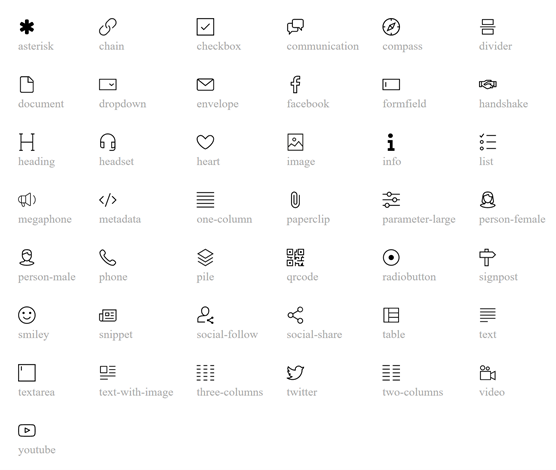
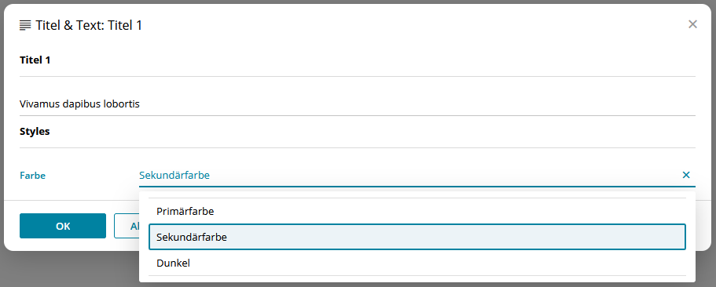
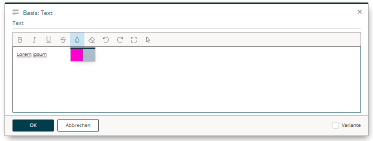
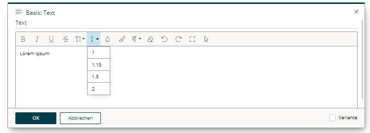

design.json
The Basics
BSI CX 22/0 introduced the design.json file, which replaces the previously used design.properties file. Information on the legacy design.properties can be found in the BSI CX design documentation for BSI CX version 1.3 or earlier.
|
If you are using the design build, the design.json file is generated automatically and no manual adjustments should be made to this file.
|
Metadata for a design is defined in the design.json file. It contains general information on the design, such as the name and author, as well as element specific information, such as with which description and icon the elements are to be displayed to the right of the editor.
{
"title": "My Customer Design",
"author": "John Doe, Doe Design Agency"
}Group information, content element specific entries, configuration capabilities for styles (allowing you to mixin different CSS styles or adding certain features using JavaScript) as well as instructions on how to customize the rich text editor experience can be found in the subsequent chapters.
{
"REM000": "-------------------- Metadata --------------------",
"title": "My Customer Design",
"author": "John Doe, Doe Design Agency",
"schemaVersion": "22.0",
"defaultLocale": "en",
"REM001": "-------------------- Content-Elements, -Groups and -Parts --------------------",
"contentElementGroups": [
{
"groupId": "buttons-and-links",
"label": "Buttons & Links",
"contentElements": [
{
"elementId": "button",
"label": "Button",
"icon": "megaphone",
"file": "content-elements/button.html",
"parts": [
{
"partId": "link",
"label": "Button"
}
],
"styleConfigs": [
"background-color"
]
}
]
},
{
"groupId": "text-and-images",
"label": "Text & Images",
"contentElements": [
{
"elementId": "text",
"label": "Text",
"icon": "text",
"file": "content-elements/text.html",
"parts": [
{
"partId": "formatted-text",
"label": "Text",
"htmlEditorConfig": "custom"
}
]
}
]
}
],
"REM002": "-------------------- Style Configs --------------------",
"styleConfigs": {
"background-color": {
"label": "Background color",
"styles": [
{
"styleId": "background-color-green",
"label": "Green",
"cssClass": "green-background"
},
{
"styleId": "background-color-red",
"label": "Red",
"cssClass": "red-background"
}
]
}
},
"REM003": "-------------------- HTML Editor Configs --------------------",
"htmlEditorConfigs": {
"custom": {
"features": [
"bold",
"italic",
"underline",
"textColor"
],
"textColors": [
"#16616d",
"#383e42"
]
}
}
}Content Element Groups
Each content element is assigned to a group. Add an entry to the design.json file to specify an identifier and a display name for each group element.
{
"contentElementGroups": [
{
"groupId": "buttons-and-links",
"label": "Buttons & Links"
},
{
"groupId": "text-and-images",
"label": "Text & Images"
}
]
}Content Elements
For each content element the following entries should be defined in order to get a clean user experience. The element identifier is the value of the data-bsi-element attribute, that is defined in the corresponding html file.
{
"contentElements": [
{
"elementId": "logo",
"label": "Cooperate Logo",
"description": "Visualize your corporate logo",
"icon": "image",
"file": "content-elements/logo.html",
"parts": [
{
"partId": "image",
"label": "Mobile image for Logo"
}
]
}
]
}Refer to the following illustration to pick a value for icon.

For element parts, labels can be defined. Those are then used as section headings while editing a content element in the content editor. partId is the data-bsi-element-part value of the element part.
Handlebars Content Elements
If the schema version is set to 25.1, this enables the new Handlebars content element feature.
{
"elementId": "paragraph",
"type": "template-element", (1)
"file": "content-elements/content/paragraph.hbs",
"contextFile": "content-elements/content/paragraph.json", (2)
"icon": "heading",
"label": "Paragraph",
"templateParts": [ (3)
{
"partId": "formatted-text",
"partContextId": "paragraph", (4)
"label": "Paragraph-Text"
}
]
}| 1 | The type attribute is mandatory for Handlebars content elements and needs to be set to template-element. The other values are optional and include html-element and pre-defined-include. |
| 2 | In addition to the source file, Handlebars elements need a context-file containing the variables supplied by the Template Parts. |
| 3 | Instead of a list of Element Parts (parts), Handlebars elements only have a list of Template Parts. |
| 4 | Context-ID that is used to refer to the Template Part in the template. |
Special Case: Composite Elements
Composites for Handlebars Elements have to be declared separately, as such:
{
"elementId": "two-column-with-content",
"type": "template-element",
"composite": true, (1)
"file": "content-elements/content/two-column-with-content.hbs",
"contextFile": "content-elements/content/two-column-with-content.json",
"icon": "two-columns",
"label": "Zweispalter mit Beispielinhalt"
} (2)| 1 | The new attribute composite needs to be set to true explicitly. |
| 2 | No Template Parts are explicitly set. They are defined in the non-composite content elements that make up the composite. |
Every content element used in a composite needs to exist as a stand-alone element.
If the stand-alone element should not be visible in the content editor, it can be hidden using "hidden": true.
|
A composite element needs to be built-up like building design.hbs: Every constituent element needs a data-bsi-context-scope and this scope is then used to assemble the element context.
Archiving Content Elements
It is possible to archive content elements in a design without losing these elements in an existing content after updating the design.
To do so, the archived attribute of corresponding elements are set to true in the design.json file.
Archived elements are still available in the design, but are no longer accessible in the content editor in the selection list of elements. Therefore it is no longer possible to insert them into a content. If they are already contained in a content, they can still be edited and moved, but can no longer be copied or pasted.
archived{
"contentElements": [
{
"elementId": "button",
"label": "Button",
"icon": "megaphone",
"file": "content-elements/button.html",
"archived": true
}
]
}Design Schema Version
The schema version is defined by the property schemaVersion in the design.json file.
This property is used to distinguish different versions of the JSON schema used for designs. Which means a new version might support additional JSON properties, that do not exist in older versions.
The schema version is also used to control behavior. The BSI CX application might interpret a new version in a different way than older versions. For instance, it may use different default values for undefined properties.
Not every new BSI CX release defines a new schema version. The following table is a list of supported schema versions, up to the latest release.
| Schema Version | Description |
|---|---|
1.0 |
Initial version introduced with BSI CX 1.3. At this point, only used for website designs. |
22.0 |
Introduced with BSI CX 22.0. Successor of the |
25.1 |
Introduced with BSI CX 25/1. Added support for Handlebars Content Elements. |
26.1 |
Introduced with BSI CX 26/1. Added support for HTML sanitization and defaults for strict security. |
Feature Toggle
The top-level property features allows setting feature toggles in a design.
For instance, there are designs that support the 'dynamic forms' feature,
in which case the BSI CX content editor should show the tab 'Form field rules' when the user edits a form.
However, this should not happen for designs which do not support that feature.
The list of supported feature names is defined by the BSI CX software.
Example:
{
"features": {
"formFieldRules": true
}
}Security
The top level property security allows to configure security for a design.
The security features are turned on by default. Design developers are encouraged to build secure designs from scratch. But what does this mean? Features of a secure design are:
-
The design does not use inline scripts.
-
The design does not use the
srcdocattribute on IFrames. -
The design does not use event attributes.
-
The design does not use
javascript:URLs.
If the design is built secure, it allows to set restrictive CSP rules for the BSI CX content editor and also for the public BSI CX landing pages (which are two different configurations). This minimizes the risk, that a potential attacker can inject malicious JavaScript code to perform a XSS attack.
You can use the following properties in the design.json to configure security features.
As mentioned above, the defaults depend on the design version (property designSchemaVersion).
This means you can also enable security in older designs, if your BSI CX is running on release 26/1 or greater.
{
"security": {
"htmlSanitization": {
"allowInlineScripts": false,
"allowEventAttributes": false,
"allowSrcdocAttribute": false
}
}
}If HTML sanitization is turned on, the DOM will be cleaned before the HTML document is stored in the BSI CX content editor.
allowInlineScripts
Controls whether insecure inline scripts are removed from the DOM.
An insecure inline script is a script tag without a source attribute or without a nonce attribute.
It is not recommended to allow inline scripts. If you must use inline scripts you should disallow inline script per CSP and only allow the required inline scripts by setting an SHA-hash in the CSP.
Styles
| BSI CX 23/2 introduced a new json format for the definition of styles. However, the previous format is still supported. A design for BSI CX 22/0 or earlier therefore does not need to be migrated to the new styles format. |
By defining styles for a certain content element, its characteristics can be controlled. By using styles to make a content element configurable, it is not necessary to implement an additional content element for an almost identical content element. A requirement to implement a button in two different colors (red and green) would therefore be implemented by creating a button content element with two styles: red and green. Styles are only defined once, and each element can have 0 to n style capabilities. Each style capability will then be transformed to a dropdown in the editing dialog of a content element, where the specific style can be applied to a content element.

Styles can be defined in two ways:
- CSS classes
-
One
cssClasscan be defined for each style option. If a style option is selected, the corresponding CSS class is added to the content element at the level of thedata-bsi-elementattribute. - DOM manipulations
-
One or more
domManipulationscan be defined per style option using aselector,attributeandvalue. When a style option is selected, DOM elements within the content element are selected using the selector and the value of the attributes, e.g. an inline style (style), a CSS class (class) or other attributes (e.g.align) are manipulated.
"styleConfigs": {
"background-color": {
"label": "Background color",
"styles": [
{
"styleId": "background-color-green",
"label": "Green",
"cssClass": "green-background", (1)
"domManipulations": [ (2)
{
"selector": "div.bg-color",
"attribute": "style",
"value": "background-color: #18a92b; color: #ffffff;"
},
{
"selector": "div.bg-color h1.heading",
"attribute": "align",
"value": "center"
}
]
},
{
"styleId": "background-color-red",
"label": "Red",
"cssClass": "red-background",
"domManipulations": [
{
"selector": "div.bg-color",
"attribute": "style",
"value": "background-color: #a21d1d; color: #ffffff;"
},
{
"selector": "div.bg-color p",
"attribute": "class",
"value": "text-on-red-bg"
}
]
}
]
}
}| 1 | Defining a cssClass |
| 2 | Defining of domManipulations |
When using styles, please consider as follows:
-
1 to n styles can be defined to appear as individual dropdowns in the editor, where one style option can be selected.
-
A style option can have 1 to n
domManipulationsbut only 1cssClass. -
cssClassanddomManipulationscan be combined or used individually.styleIdmust always be set. -
When a DOM manipulation is created with the
styleorclassattribute, the value of the selected style option is added to the list of values currently present on the element. Only the values defined in the corresponding, unselected style options are overwritten. Independent values remain unchanged. In contrast, when using other attributes, e.g.width, the value is not appended when the style option is selected, but will instead be overwritten.
It is strongly recommended that styles in email templates are not set via CSS classes, but via DOM manipulations with the style attribute, as many email clients still require certain styles to be set via inline styles.
|
| Useful for the development of e-mail templates that are optimized for MS Outlook: MSO conditional comments can also be selected and manipulated with the DOM manipulation selector. |
The following shows how a style can be applied on a content element using cssClass. If a style is preselected on an element, it is sufficient to add the desired CSS class to the respective element in the HTML.
"contentElements": [
{
"elementId": "button",
"label": "Button",
"styleConfigs": [
"background-color",
"border-color",
"text-color"
]
}
].colored-button.green-background { background-color: green; }
.colored-button.red-background { background-color: red; }<button data-bsi-element="button" class="colored-button green-background"></button>Configuration capabilities of the Rich Text Editor
By defining a content element part of type formatted-text, a fully featured rich text editor will be available to the users of the content editor. The built-in WYSIWYG rich text editor is powered by Froala. BSI allows to customize a subset of Froala features directly out of a design. In order to do so, a configuration section in the design.json can be used to customize the features of the rich text editor. Each element part of type formatted-text can have its own custom list of features, although in most cases one feature definition is shared among different content elements.
A typical, simple rich text editor configuration will look like this:
"htmlEditorConfigs": {
"my-config": {
"features": [
"bold",
"italic",
"underline",
"textColor"
],
"textColors": [
"#ff00cc",
"#aabbcc"
]
}
}The above configuration (named my-config) needs to be assigned to a concrete element part in order to apply the customizations:
"contentElements": [
{
"elementId": "text",
"label": "Text",
"parts": [
{
"partId": "formatted-text",
"label": "Text",
"config": {
"htmlEditorConfigId": "my-config"
}
}
]
}
]
The entire list of supported configuration options is documented in the subsequent chapters.
Feature list
The most important configuration option is the list of features that will be shown in the WYSIWYG editor.
If one wants to support bold, italic, and underlined text, the definition for doing so would be like this:
"htmlEditorConfigs": {
"my-config": {
"features": [
"bold",
"italic",
"underline"
]
}
}Each key in the list below (indicated in bold) identifies a certain feature, which is then displayed as a separate button in the editor. The sequence is irrelevant and does not affect the display order, as the display order is given by the server-side implementation.
The following features are available:
| bold |
the text can be formatted in bold. |
| italic |
the text can be formatted in italics. |
| underline |
the text can be underlined. |
| strikeThrough |
the text can be displayed with a line through the center. |
| subscript |
the text can be displayed as a subscript. |
| superscript |
the text can be displayed as a superscript. |
| fontSize |
the font size can be changed based on the font-sizes value list. |
| lineHeight |
the line height can be changed based on the line-heights value list. |
| textColor |
the text color can be changed based on the text-colors value list. |
| backgroundColor |
the background color can be changed based on the background-colors value list. |
| alignLeft |
the text can be left aligned. |
| alignCenter |
the text can be centered. |
| alignRight |
the text can be right aligned. |
| alignJustify |
the text can be justified (As most browsers are terrible in handling justified text properly, we recommend to not enable this feature). |
| formatOL |
the text can be displayed as an organized list. |
| formatUL |
the text can be displayed as an unorganized list. |
| outdent |
the text can be outdented (useful for sub-lists). |
| indent |
the text can be indented (useful for sub-lists). |
| paragraphFormat |
changes the format of the paragraph based on the formats value list. |
| quote |
display the text as a quote. |
| specialCharacters |
inserts special characters. |
| emoticons |
inserts emoji. |
| insertLink |
permits the immediate insertion of links without having to use a wildcard. |
| html |
displays and edit the HTML of the text. |
| help |
displays Help. |
| studioLink |
context-sensitive support to edit BSI CX links in the rich text editor. |
In addition, the following features are always displayed in the editor and must therefore not be listed separately:
| clearFormatting |
clears all formatting from the selected text. |
| undo |
undoes the change. |
| redo |
redoes the change. |
| fullscreen |
displays the editor in full screen mode. |
| selectAll |
selects the entire text in the editor. |
Our experience has shown that these features are useful in the vast majority of cases and that the editing experience would be significantly affected without them.
Value Lists
A list of values that will be shown in the editor can be defined for certain features (e.g. the list of colors when the font color feature is active).
"htmlEditorConfigs": {
"my-extended-config": {
"features": [
"bold",
"italic",
"underline"
],
"textColors": [
"#16616d",
"#ff7d00",
"#383e42"
],
"backgroundColors": [
"#ffffff",
"#383e42"
],
"formats": [
"p",
"h1",
"h2",
"pre"
],
"fontSizes": [
12,
16,
24
],
"fontSizeUnit": "px",
"fontSizeDefault": 16,
"lineHeights": [
1,
1.15,
1.5,
2
],
"enter": "p"
}
}
Colors
To customize the color picker for textColor and backgroundColor, provide a list of colors as follows:
"textColors": [
"#16616d",
"#ff7d00",
"#383e42"
]"backgroundColors": [
"#ffffff",
"#383e42"
]Paragraph formats
Paragraph formatting and headings can be configured as well. This may be customized through the formats value list, which will only have an effect if the feature paragraphFormat is active.
"formats": [
"p",
"h1",
"h2",
"pre"
]The following formats can be provided:
| p |
for an html paragraph ( |
| h1 |
for an html H1 title ( |
| h2 |
|
| h3 |
|
| h4 |
|
| h5 |
|
| h6 |
|
| pre |
for preformatted text ( |
Line heights
To customize the lineHeight value list, provide a list of heights in percentages, comma separated. The line height values define the factor by which factor the current line height is multiplied based on the font size used.
"lineHeights": [
1,
1.15,
1.5,
2
]Font size
To customize the list of font sizes, provide a list of sizes for fontSizes. A custom default value can be set by using fontSizeDefault.
Size information is provided numerically. If several sizes are permitted, then each individual entry is listed in a comma separated format. The data on font sizes (font size and font size default) are absolute values.
The unit of measurement (fontSizeUnit) defines which unit to be used for information regarding the font sizes. The following are permitted:
| px |
Pixels |
| em |
Relative to font size of the parent |
| rem |
Relative to font size of the root element |
| pt |
Points |
| cm |
Centimeters |
| mm |
Millimeters |
"fontSizes": [
8,
12,
16,
24,
32
],
"fontSizeUnit": "px",
"fontSizeDefault": 16Entry mode
By defining the entry mode (enter), you define what happens in the editor when the kbd:[Enter] key on your keyboard is pressed. The following options are available:
| p |
to enclose the text with a paragraph ( |
| div |
to enclose the text with a |
| br |
to simply insert a |
In p and div modes, there is the option to force a simple line break with kbd:[Shift + Enter]. This will add <br> without immediately ending the block and starting a new one.
"enter": "div"